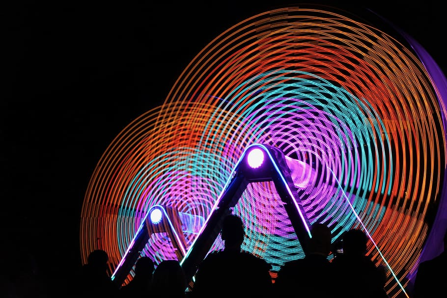
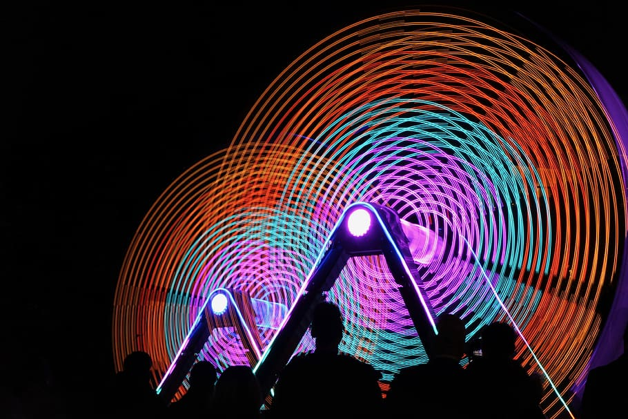

Vivid Sydney
Vivid Sydney is an annual festival of light, music, and ideas that takes place in Sydney, Australia. The event attracts thousands of visitors each year, who come to see the city transformed by stunning light installations, art displays, musical performances, and talks by thought leaders and innovators from around the world. The festival is held over several weeks in May and June, and features events at various locations throughout the city, including the Sydney Opera House, the Royal Botanic Garden, and other iconic landmarks. Vivid Sydney is an unforgettable experience that celebrates creativity, innovation, and the spirit of Sydney, and offers something for everyone to enjoy.
The festival takes place in various locations throughout Sydney, including the Opera House, the Harbour Bridge, and Circular Quay.
Upcoming Events
-
The Last Ocean
May 26 - June 17
-
Biotechture
May 26 - June 17
-
Murmuration
May 26 - June 17
Gallery
 
